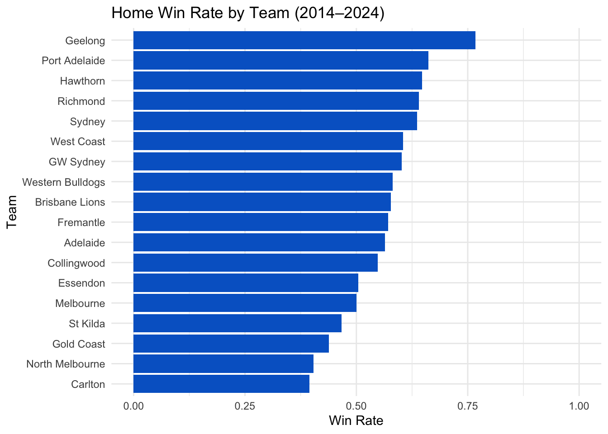
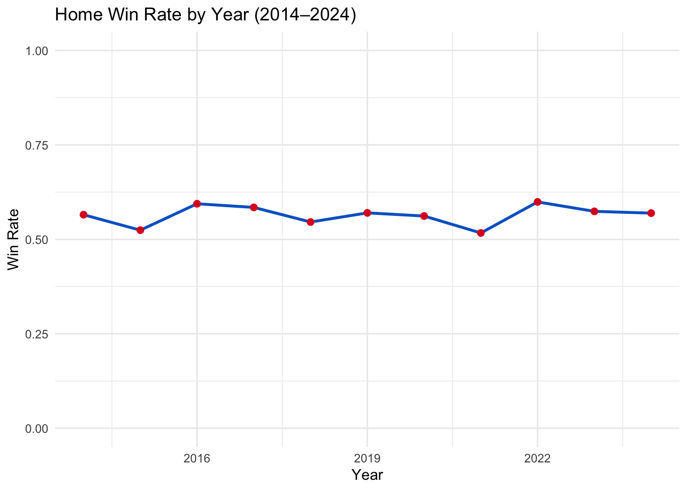
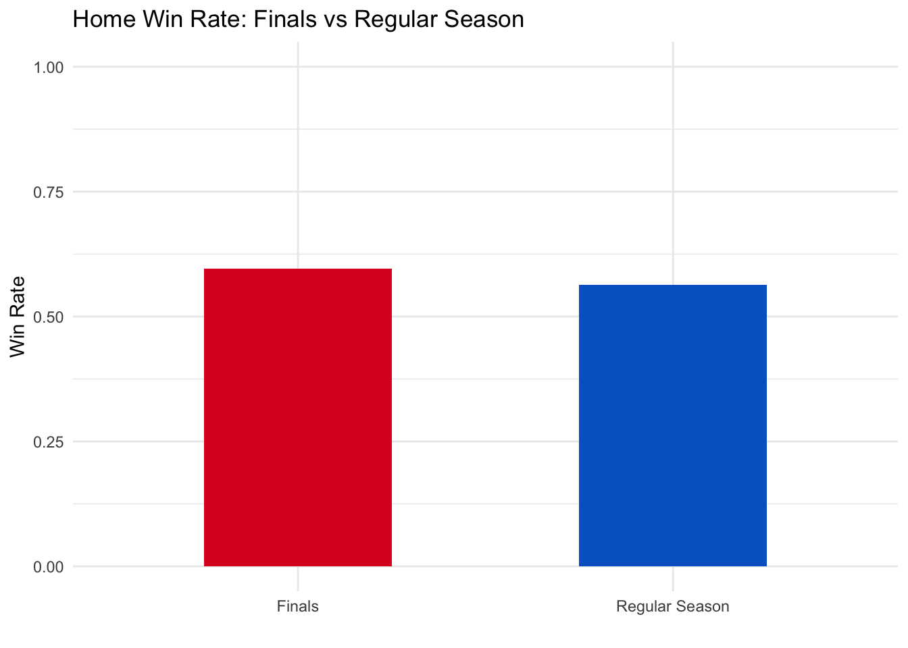

# A tibble: 10 × 3
Variable Type Description
<chr> <chr> <chr>
1 Date Date The date the match was played (e.g., 29-Mar-2014)
2 Year Integer Year extracted from Date
3 Round String Round identifier (e.g., R1, R2, QF, GF)
4 Home_Team String Name of the home team
5 Away_Team String Name of the away team
6 Home_Total Integer Home team total points
7 Away_Total Integer Away team total points
8 Venue String Stadium name (e.g., MCG, SCG, Marvel Stadium)
9 Home_Win Binary 1 if home team won, 0 if not (NA if draw)
10 Is_Finals Boolean TRUE if match is a final (based on Round), FALSE otherwiseHas home ground advantage significantly affected match outcomes over the past decade of AFL (2014-2024)
Assignment 4 ETC5512
Question1:
Has home ground advantage significantly affected match outcomes over the past decade of AFL from 2014 to 2024.
I’m an AFL fan, and home advantage is often discussed but rarely quantified across time and teams. I am particularly interested in whether this effect varies by team or changes during finals.
Question2: What data will you be using to answer that question? Explain why this data is suitable for the task.
To answer the question I use the dataset from AFL Tables which contains historical records of every AFL game played since 1897 up to 2024 season in a plain-text format. Moreover, the dataset also includes variables which are all necessary for identifying home games and determining winners, such as:
date, round, venue
home and away teams
final scores
The dataset is published under the Creative Commons Attribution-NonCommercial-ShareAlike 3.0 Unported (CC BY-NC-SA 3.0) licence, which allows reuse for educational and non-commercial purposes with proper attribution.
Question3: In your submission, include comprehensive details about your data. You many like to include a read me and a data dictionary. Also be sure to make clear the type of data (census, sample, experimental), any data limitations, data privacy or any ethical considerations. The relevant details here will depend on the data you choose and the analysis you perform.
Data Dictionary:
- The data in this file contains the following variables:
README
Author: Sumintra Boonmat
Date of Release: 20/06/2025
Description:
The following dataset supports an analysis of home ground advantage in the Australian Football League (AFL) over the 2014–2024 seasons. It includes structured match-level data derived from the publicly available AFL Tables.
Each record corresponds to a match and includes variables such as match date, round, home and away teams, scores, venue, and derived indicators such as match outcome (home win/loss) and whether the match occurred during the finals series. The dataset has been processed from a raw text format into a structured tabular format using R, with additional columns created for team performance and season analysis.
This data was used to investigate whether home ground advantage persists in modern AFL seasons, how it varies between teams, and whether it holds in finals matches.
The finals rounds in AFL are typically abbreviated as:
- EF - Elimination Final
- QF - Qualifying Final
- SF - Semi Final
- PF - Preliminary Final
- GF - Grand Final
Data Source:
- AFL Tables which maintained by Rohan Connolly and AFL statistics volunteers
Data Type:
- Observational data from historical records
Limitations:
- Rounds are abbreviated and finals rounds require classification (e.g., QF, GF).
- Some venues may have changed names over time.
License:
- Creative Commons Attribution-NonCommercial-ShareAlike 3.0 (CC BY-NC-SA 3.0)
Question4: Describe the steps to download your data and any steps to process your data for your analysis.
Steps to download the data and data cleaning:
- Visit the website AFL Tables.
- Under the “Big List” section, click on “All games in chronological order”, which links to the file
bg3.txt. This text file contains every AFL game since 1897. - Use R to download the file directly:
download.file(
url = "https://afltables.com/afl/stats/biglists/bg3.txt",
destfile = "data/game_stats.txt"
)- Read the raw file and skip the first two non-data lines.
raw_game_stats <- readLines("data/game_stats.txt")[-c(1,2)]- Parse the text into structured columns.
library(dplyr)
library(stringr)
library(tibble)
library(lubridate)
parsed <- str_match(raw_game_stats,
'^\\s*"?(\\d+)\\.\\s+(\\d{1,2}-[A-Za-z]+-\\d{4})\\s+(R\\d+|EF|QF|SF|PF|GF)\\s+([A-Za-z .]+?)\\s+(\\d+\\.\\d+\\.\\d+)\\s+([A-Za-z .]+?)\\s+(\\d+\\.\\d+\\.\\d+)\\s+(.*?)"?$'
)
match_df <- as_tibble(parsed[, -1])
colnames(match_df) <- c(
"Match_No", "Date", "Round", "Home_Team", "Home_Score",
"Away_Team", "Away_Score", "Venue"
)
match_df <- match_df |>
mutate(across(everything(), str_trim))- Convert date to a proper format and filter matches between 2014 and 2024.
match_df <- match_df |>
mutate(
Date = dmy(Date),
Year = year(Date)
)
match_recent <- match_df |>
filter(year(Date) >= 2014, year(Date) <= 2024)- Split the score strings into goals, behinds, and total points.
split_score <- function(score_str) {
parts <- str_split_fixed(score_str, "\\.", 3)
tibble(
Goals = as.numeric(parts[,1]),
Behinds = as.numeric(parts[,2]),
Total = as.numeric(parts[,3])
)
}
home_scores <- split_score(match_recent$Home_Score)
away_scores <- split_score(match_recent$Away_Score)
match_clean <- match_recent |>
bind_cols(
home_scores |>
rename(Home_Goals = Goals, Home_Behinds = Behinds, Home_Total = Total),
away_scores |>
rename(Away_Goals = Goals, Away_Behinds = Behinds, Away_Total = Total)
)- Create new variables to indicate whether the home team won and team is in the final round or not.
match_clean <- match_clean |>
mutate(
Home_Win = case_when(
Home_Total > Away_Total ~ 1,
Home_Total < Away_Total ~ 0,
TRUE ~ NA_real_ # for draws
),
Match_Finals = Round %in% c("EF", "QF", "SF", "PF", "GF")
)- Select relevant columns for analysis.
final_matches <- match_clean |>
select(Match_No,Year, Date, Round, Venue,
Home_Team, Home_Total,
Away_Team, Away_Total,
Home_Win, Match_Finals)References
Wickham H, François R, Henry L, Müller K, Vaughan D (2023). dplyr: A Grammar of Data Manipulation. R package version 1.1.4, https://CRAN.R-project.org/package=dplyr.
Wickham H (2023). stringr: Simple, Consistent Wrappers for Common String Operations. R package version 1.5.1, https://CRAN.R-project.org/package=stringr.
Müller K, Wickham H (2023). tibble: Simple Data Frames. R package version 3.2.1, https://CRAN.R-project.org/package=tibble.
Garrett Grolemund, Hadley Wickham (2011). Dates and Times Made Easy with lubridate. Journal of Statistical Software, 40(3), 1-25. URL https://www.jstatsoft.org/v40/i03/.
Has home ground advantage significantly affected match outcomes over the past decade of AFL from 2014 to 2024.
“Home ground advantage” refers to the belief that teams are more likely to win when they play at their traditional home venue, a concept deeply embedded in Australian Football League (AFL) culture and one of the most frequently debated ideas in sports. But does playing on your home turf still significantly affect outcomes in modern professional footy? With the rise of interstate teams, neutral venues, and structured finals systems, it’s worth investigating whether this long-held assumption still holds true. In this blog post, I analyse 10 seasons of AFL match data to explore three key questions:
Do teams win more often at home?
Has the impact of home ground advantage changed over time?
Does home advantage persist during finals?
The dataset was sourced from AFL Tables, which records every AFL game played since 1897. I filtered matches from 2014 to 2024 and parsed match details such as date, round, home and away teams, scores, and venues. Scores were broken down into goals, behinds, and total points, and I create new variables like Home_Win and Match_Finals to enable targeted analysis.
The cleaned dataset allowed me to calculate win percentages, visualise trends over time, and compare performance between finals and regular season matches.
Analysis
1. Home Win Rate by Team
Home ground advantage is a widely discussed concept in the AFL, and this analysis helps quantify its impact over the past decade. The chart shows that some teams, such as Geelong and Port Adelaide, have consistently won more than 50% of their home games, suggesting a strong advantage when playing on familiar turf. In contrast, other teams, including Carlton and North Melbourne, have struggled to achieve similar success at home.
These differences may be influenced by other factors such as weather, crowd support, etc.

2. Home Win Rate Across Time
An annual analysis of home win rates from 2014 to 2024 shows that home ground advantage has remained relatively stable, with win rates consistently above 50%. Most years fall within the 52–59% range, with peaks in 2016 and 2022 reaching around 59%. The lowest point occurred in 2021, dipping to approximately 51%, likely due to lingering COVID-19 disruptions. Overall, home teams have won more often than lost across every year, confirming that home ground advantage has been present and continues to play a meaningful role in match outcomes.

3. Finals vs Regular Season Performance
2014–2024 period:
Home win rate in regular season games: ~53–54%
Home win rate in finals: ~55%
This small but noticeable increase suggests that playing at home may offer a slight edge in finals, though the competitive nature of finals and use of shared venues like the MCG likely moderate this effect.

Conclusions
Home ground advantage exists but is modest: Over the past 10 seasons, home teams have won slightly more than half of their matches.
Team variation matters: Some teams benefit more from home conditions than others.
Finals reduce the effect: High-stakes matches at shared venues tend to neutralise home-field benefits.
These findings challenge the traditional view that home ground advantage is a dominant factor in AFL outcomes. For supporters, clubs, and analysts, it’s worth acknowledging that in today’s professional era, preparation and team quality may outweigh location.
References
AFL Tables. (n.d.). AFL match results and statistics. Retrieved from https://afltables.com/afl/afl_index.html
Question5: Tell us about parts of your data processing or analysis that weren’t “sexy” and wouldn’t typically be included in a blog post. (e.g. Was their any data drudgery or time intensive wrangling? Were there any repetitive tasks or manual tasks? If it was easy, describe what made it easy?)
The time consuming part but important in this analysis was manually checking whether each team’s home ground matched the game location. This step was time-consuming but important, since correctly identifying true home games was key to the analysis. It wasn’t something that could be fully automated, and it required careful attention to detail.
Question6: Were there any challenges that you faced in conducting this analysis. These may take the form of data limitations or coding challenges? (e.g. Was there anything in your analysis that you were not anticipating when you started? Did you have to change your intended scope? Did you need to master a new skill? Were there any problems you were proud of solving?)
One big challenge in this analysis was handling the long history of AFL data. Since the AFL premiership has run from 1897 to the present. Many things have changed, teams have joined, merged, or left, and stadiums have been renamed. This made it hard to keep team names and home grounds consistent over time.
To keep things clear, I focused only on the last 10 seasons (2014–2024), when the data was more stable and consistent. Figuring out which games were true home games (and not at shared or neutral venues) also took careful logic and sometimes manual checks.
Question7: Tell us about any imperfect parts of your work and how you would like to expand or improve this analysis in future? Be clear about any limitations or aspects of your analysis that fell beyond scope.
Limitations:
This analysis only looked at basic match results like wins and total points. It didn’t include other important factors like player injuries, crowd size, or weather, which could help explain the results more.
Future Improvements:
Some venues like the MCG and Marvel Stadium are used as a home ground by more than one team, e.g., St Kilda and Essendon have Marvel Stadium as their home venue, so it’s harder to tell which team really has the home advantage. For future improvement, we could consider things like bye rounds, how familiar teams are with the venue, and how the crowd is split between teams.
Question8: Also submit 4 earlier versions of your assignment that show your iterative process. These should be your messy versions and include exploratory code. We recommend you save these files as you progress through your assignment. Provide a short overview for markers of what you fixed/learnt/improved/changed between each file. (If you are comfortable with GitHub you may submit your Github repo, but please refer to individual commits.)
I use GitHub to record my workflow history:
- 3db1d6a: added task 1 - Imported the data, data cleaning.
- db96c74: added task2 - Write blog post and calculated and visualized win rates.
- 29d7421: added task 3 - Behind the scenes details added.
- - Final version of the analysis.